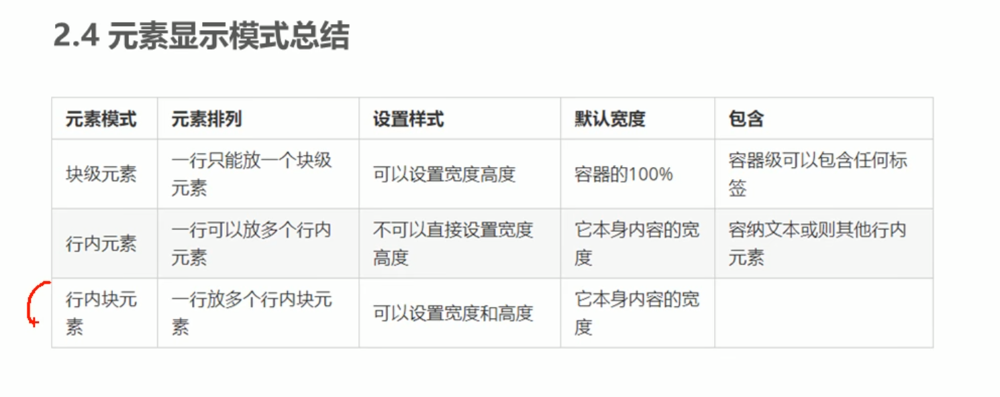

块元素
常见的快元素有h1-h6、p、div、ul、ol、li、等，其中的div是最典型的块元素。
块元素的特点：
1.比较霸道，独占一行。
2.高度、宽度、外边距、内边距、都可以控制。
3.宽度默认是容器（父级宽度）的100%。
4.是一个容器及盒子，里面可以放行内或者块元素。
注意：文字内元素不能放块元素
行内元素（或内联元素）
常见的行内元素有a、strong、b、em、i、del、s、ins、u、span等，其中span是最典型的行内元素。
行内元素特点：
1.相邻行内元素在一行上可以显示多个。
2.宽、高直接设置是无效的。
3.默认宽度就是它本身内容的宽度。
4.行内元素只能收纳文本或者其他行内元素。
注意：链接里面不能再放其它链接，a标签可以放块元素，但是给a转换一下块级元素是最安全的。
行内块元素
在行内元素中存在一些特殊的标签，img、input、td、它们同时具有行内元素以及块元素的特点。有些资料称为行内块元素。
行内块元素特点：
1.相邻行内元素在一行上可以显示多个（行内元素特点）
2.默认宽度就是它本身内容的宽度（行内元素特点）
3.高度、宽度、外边距、内边距、都可以控制（块元素特点）

css元素模式转换
特殊情况下我们需要元素的模式转换。
display: block;/* 转换成块元素 */
display: inline;/* 转换成行内元素 */
display: inline-block;/* 转换成行内块元素 */
a我是行内元素
a我是行内元素
div我是块元素
div我是块元素
span我是行内元素
span我是行内元素
css代码：
a{/* 标签选择器 */
width: 100px;
height: 50px;
background-color: #FF0000;
display: block;/* 把行内元素 a 转换成块元素 */
}
div{/* 标签选择器 */
width: 100px;
height: 50px;
background-color: #0000FF;
display: inline;/* 把块元素 div 转换成行内元素 */
}
span{/* 标签选择器 */
width: 100px;
height: 50px;
background-color: #FFC0CB;
display: inline-block;/* 把行内元素 span 转换成行内块元素 */
}